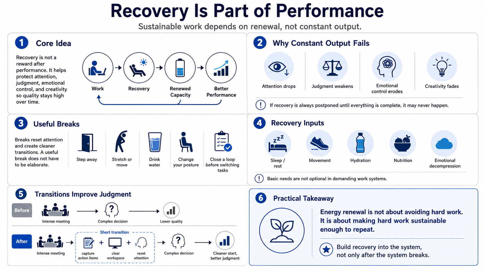

Recovery and Renewal
Connecting to LMS... Progress: in progress

Narration
Recovery is part of performance, not a reward after performance. Constant output eventually reduces quality because attention, judgment, emotional control, and creativity all need renewal. Recovery can be short or long, active or quiet, individual or social. The important idea is that recovery belongs inside the system. If it is always postponed until everything is complete, it may never happen.
Breaks create transitions that help attention reset. A useful break does not have to be elaborate. It may mean stepping away from the screen, moving briefly, getting water, changing posture, or closing a loop before moving to a new task. Sleep matters at a general level because people need adequate rest to sustain judgment and learning, but this course does not provide sleep treatment guidance or clinical advice.
Movement, hydration, nutrition, and emotional decompression can all support capacity in broad practical ways. The goal is not to prescribe a diet, supplement protocol, or performance hack. It is to recognize that people do better when basic needs are not treated as optional. A demanding work system that ignores the body and emotions will eventually pay through errors, conflict, and lower-quality execution.
Transitions between tasks are especially valuable. Going straight from an intense meeting into a complex decision may preserve calendar efficiency while reducing judgment quality. A short transition can capture action items, clear the workspace, reset attention, and make the next start cleaner. Energy renewal is not about avoiding hard work. It is about making hard work sustainable enough to repeat.